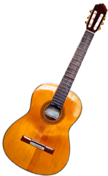

The guitar is a musical instrument classified as a string instrument with
anywhere from four to 18 strings, usually having six. The sound is projected
either acoustically, using a hollow wooden or plastic and wood box (for an
acoustic guitar) or through electrical amplifier and a speaker (for an electric
guitar).
It is typically played by strumming or plucking the strings with the
fingers, thumb and/or fingernails of the right hand or with a pick while
fretting (or pressing against the frets) the strings with the fingers of the
left hand.
The guitar is a type of chordophone, traditionally constructed from
wood and strung with either gut, nylon or steel strings and distinguished from
other chordophones by its construction and tuning. The modern guitar was
preceded by the gittern, the vihuela, the four-course Renaissance guitar, and
the five-course baroque guitar, all of which contributed to the development of
the modern six-string instrument.
There are three main types of modern acoustic guitar: the classical guitar, the
steel-string acoustic guitar, and the archtop guitar, which is sometimes called
a "jazz guitar".
The tone of an acoustic guitar is produced by the strings'
vibration, amplified by the hollow body of the guitar, which acts as a
resonating chamber. The classical guitar is often played as a solo instrument
using a comprehensive finger-picking technique where each string is plucked
individually by the player's fingers, as opposed to being strummed.
The term
"finger-picking" can also refer to a specific tradition of folk, blues,
bluegrass, and country guitar playing in the United States.

Electric guitars, introduced in the 1930s, use an amplifier and a loudspeaker
that both makes the sound of the instrument loud enough for the performers and
audience to hear, and, given that it produces an electric signal when played,
that can electronically manipulate and shape the tone using an equalizer (e.g.,
bass and treble tone controls) and a huge variety of electronic effects units,
the most commonly used ones being distortion (or "overdrive") and reverb.
Early
amplified guitars employed a hollow body, but a solid wood body was eventually
found more suitable during the 1960s and 1970s, as it was less prone to unwanted
acoustic feedback "howls". The loud, amplified sound and sonic power of the
electric guitar has played a key role in rock music, both as an accompaniment
instrument (playing riffs and chords) and performing guitar solos, and in many
rock subgenres, notably heavy metal music and punk rock. The electric guitar has
had a major influence on popular culture.
The guitar is used in a wide variety of musical genres worldwide. It is
recognized as a primary instrument in genres such as blues, bluegrass, country,
flamenco, folk, jazz, jota, mariachi, metal, punk, reggae, rock, soul, and many
forms of pop.
Before the development of the electric guitar and the use of synthetic
materials, a guitar was defined as being an instrument having "a long, fretted
neck, flat wooden soundboard, ribs, and a flat back, most often with incurved
sides."
The term is used to refer to a number of chordophones that were
developed and used across Europe, beginning in the 12th century and, later, in
the Americas A 3,300-year-old stone carving of a Hittite bard playing a stringed
instrument is the oldest iconographic representation of a chordophone and clay
plaques from Babylonia show people playing an instrument that has a strong
resemblance to the guitar, indicating a possible Babylonian origin for the
guitar.
The modern word guitar, and its antecedents, has been applied to a wide variety
of chordophones since classical times and as such causes confusion.
The English
word guitar, the German Gitarre, and the French guitare were all adopted from
the Spanish guitarra, which comes from the Andalusian Arabic)and the Latin
cithara, which in turn came from the Ancient Greek κιθάρα (kithara).
Many influences are cited as antecedents to the modern guitar. Although the
development of the earliest "guitars" is lost in the history of medieval Spain,
two instruments are commonly cited as their most influential predecessors, the
European lute and its cousin, the four-string oud; the latter was brought to
Iberia by the Moors in the 8th century.
At least two instruments called "guitars" were in use in Spain by 1200: the
guitarra latina (Latin guitar) and the so-called guitarra moresca (Moorish
guitar).
The guitarra moresca had a rounded back, wide fingerboard, and several
sound holes. The guitarra Latina had a single sound hole and a narrower neck. By
the 14th century the qualifiers "moresca" or "morisca" and "latina" had been
dropped, and these two cordophones were simply referred to as guitars.
The Spanish vihuela, called in Italian the "viola da mano", a guitar-like
instrument of the 15th and 16th centuries, is widely considered to have been the
single most important influence in the development of the baroque guitar.
It had
six courses (usually), lute-like tuning in fourths and a guitar-like body,
although early representations reveal an instrument with a sharply cut waist. It
was also larger than the contemporary four-course guitars.
By the 16th century,
the vihuela's construction had more in common with the modern guitar, with its
curved one-piece ribs, than with the viols, and more like a larger version of
the contemporary four-course guitars.
The vihuela enjoyed only a relatively
short period of popularity in Spain and Italy during an era dominated elsewhere
in Europe by the lute; the last surviving published music for the instrument
appeared in 1576.
Meanwhile, the five-course baroque guitar, which was documented in Spain from
the middle of the 16th century, enjoyed popularity, especially in Spain, Italy
and France from the late 16th century to the mid-18th century.In Portugal, the
word viola referred to the guitar, as guitarra meant the "Portuguese guitar", a
variety of cittern.